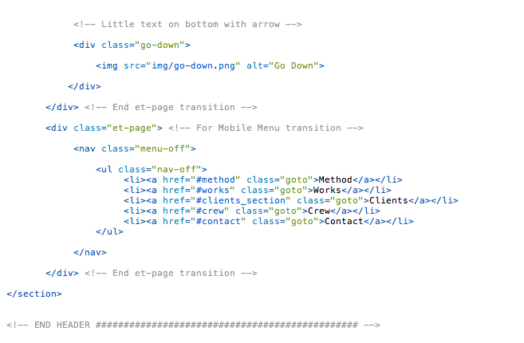

Created: 29/08/2014
By: Supview
Email: hello@iamsupview.be
Thank you for purchasing my theme. If you have any questions that are beyond the scope of this help file, please feel free to email via my user page contact form here. Thanks so much!
Table of Contents
A) HTML Structure - top
This theme is a one page portfolio. All of the information within the main content area is nested within a div with an id of "primaryContent". The general template structure is the same throughout the template. Here is the general structure looks like.
As you can see, it's pretty well commented, you'll found easy what you are looking for.
if you are comfortable with HTML&CSS, you can have take a look on the gumby Grid framework ( http://www.gumbyframework.com ), you'll found how to modify correctly the width of the different section into your future website.
Concerning the Portfolio, if you want to add a project, simply copy past the code of the figure and also the work-container on the bottom of the main html page. after doing this just initilise the animation on the main.js file. You will found easily which code you have to edit. Every code is pretty well commented.
B) CSS Files and Structure - top
The Main stylesheet have a table of content, here it's:
/* SIXWATS TEMPLATE V1.0 BY SUPVIEW.BE 01. Font Face 02. Generals Settings 03. Navigation Settings 04. Header Settings 05. Method Settings 06. Works Settings 07. Clients Settings 08. Crew Settings 09. Crew Alone Settings 10. Instagram Settings 11. Contact Settings 12. Footer Settings 13. Media Queries Settings */
I'm using only 4 CSS files in this theme.
The first file named style.css contains all of the specific stylings for the page. The file is separated into sections like this exemple:
/* 02. GENERALS SETTINGS ================================================== */ some code /* 04. NAVIGATION SECTION ================================================== */ some code /* 05. HEADER SECTION ================================================== */ some code /* 06. METHOD SECTION ================================================== */ some code
If you would like to edit a specific section of the site, simply find the appropriate label in the CSS file, and then scroll down of do CTRL + F until you find the appropriate style that needs to be edited.
Concerning the Crew, if you want the single member, you can simply delete the display:none ( line 913 ) and add a display:none on the #crew div ( line 827 ).
Concerning the Portfolio Grid, if you want the to edit the size of the width of each work, you have simply to edit the width % on line 552 of the main stylesheet.
The second file named gumby.css is the framework that i'm using. you have nothing to touch there. It's for the row and column.
The tirth file named elementTransitions.css is the stylesheet for the transitions of the Mobile Menu. You don't have touch anything on this one.
The fourth file named font-awesome.css is the stylesheet used for the social icon.
C) JavaScript - top
This theme imports Ten Javascript files.
- jQuery 1.9.1
- jQuery Modernizr
- main.js
- plugins.js
- instagram.js / jquery.instagram.js
- classie.js
- jquery.backgroundvideo.js
- jquery.parallax-1.1.3.js
- mediaCheck.js
- waypoints.min.js
- jquery.scrollto.js
- elementTransitions.min.js
- jquery.scrollme.js
- yui.js
- jQuery is a Javascript library that greatly reduces the amount of code that you must write
- Modernizr make an altenative for others navigators if they don't accept some code
- main.js contain little script for making the always top navigation, smooth scrolling etc. This is where you setup most of the js library
- plugins.js is used for some plugins like the flickering text for validate the form
- jquery.instagram.js is used for initialise the instagram feed.
- classie.js is used for reduced height of the navigation when you scroll down
- jquery.backgroundvideo.js is used for the background video into the header section
- jquery.parallax-1.1.3.js is used for the header background, which you can set up into the main.js file.
- mediaCheck.js allows you to disable or enable javascript code into the main.js
- waypoints.min.js is used in this case for the scrolling effect.
- jquery.scrollto.js is used for the smooth scrolling from the navigation.
- elementTransitions.min.js is used for the Mobile Menu. You can play with differents transitions ( http://dan-silver.github.io/ElementTransitions.js/ ).
- jquery.scrollme.js is used for the animations for each elements when they entering into the viewport. You can found how to set up a transition here : http://scrollme.nckprsn.com/
- yui.js is used for the header text which is scrolling with the viewport.
Concerning the VideoBackground, if you don't want to use it just delete theses lines from the main.js ( line 429 )
var videobackground = new $.backgroundVideo($('.page1'), {
"align": "centerXY",
"width": 1280,
"height": 720,
"path": "http://www.baribal.be/exho/video/",
"filename": "desktop",
"types": ["mp4", "ogg", "webm"]
});
D) Contact Form - top
For using it with your E-Mail just replace the code below here on line 3 of the from_sender.php .
$to = "hello@yourmail.com";
E) Sources and Credits - top
I've used the following images, icons or other files as listed.
- Gumby Framework - http://www.gumbyframework.com
- Team member by Koji Ishibashi - http://www.behance.net/gallery/Employee-profile-photo-for-Brooklyn-Boulders/4690841
- Videobackground from Victor Coulon - http://victorcoulon.fr
- Icon Set bu Dario Ferrando - http://linea.io/
- Works Hover effect from Codrops - http://tympanus.net/codrops/2014/06/19/ideas-for-subtle-hover-effects/
- Social Icon from font-awesome - http://fortawesome.github.io/Font-Awesome/
Once again, thank you so much for purchasing this theme. As I said at the beginning, I'd be glad to help you if you have any questions relating to this theme. No guarantees, but I'll do my best to assist. If you have a more general question relating to the themes on ThemeForest, you might consider visiting the forums and asking your question in the "Item Discussion" section.